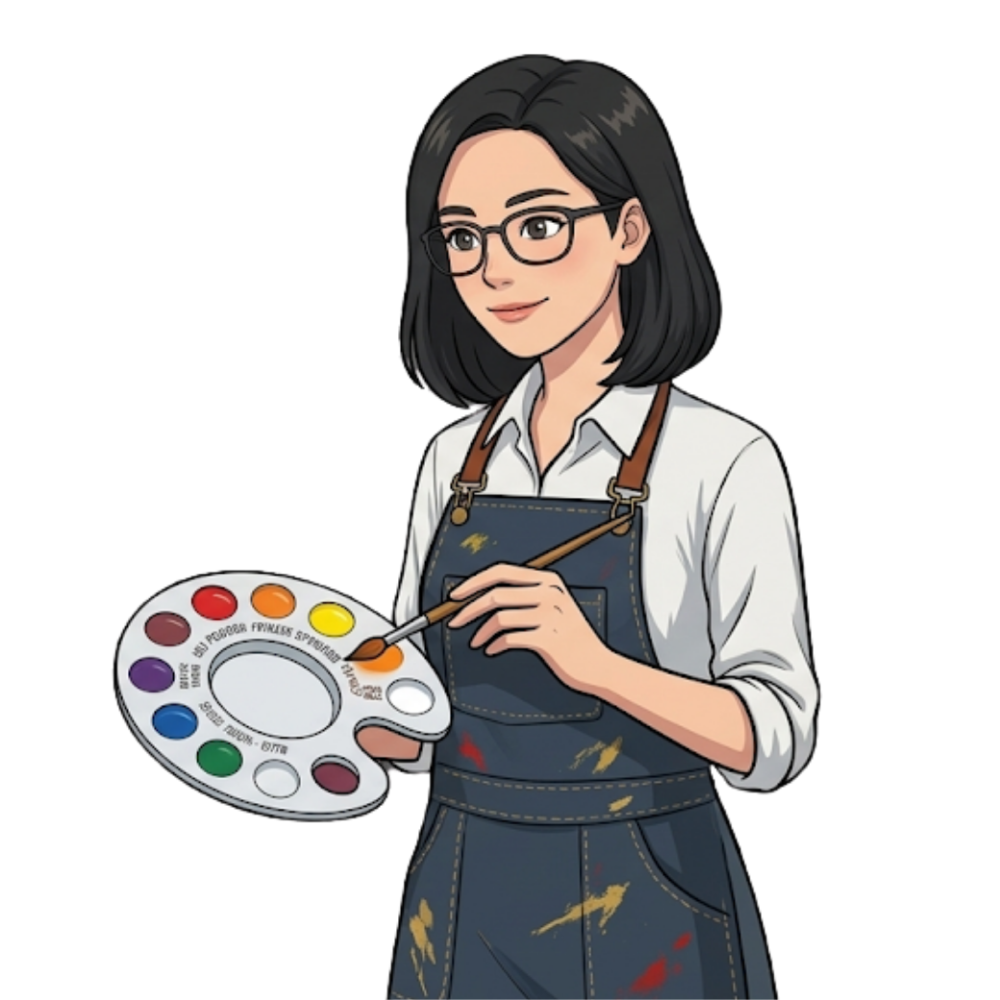

Colors influence more than 60% of consumer judgment! Answer reading comprehension and grammar challenges to collect color fragments. Reconstruct the final escape passphrase to unlock the color lab door! 色彩影響超過 60% 的消費者判斷！回答閱讀理解與核心句型挑戰，蒐集色彩碎片重組「本課逃生密令」，解鎖色彩實驗室大門！
Answer correctly to unlock English sentence fragments · Unscramble the full sentence to escape!
每關答對即解鎖一個英文句型碎片 · 結尾重組完整句子方能逃出色彩密室